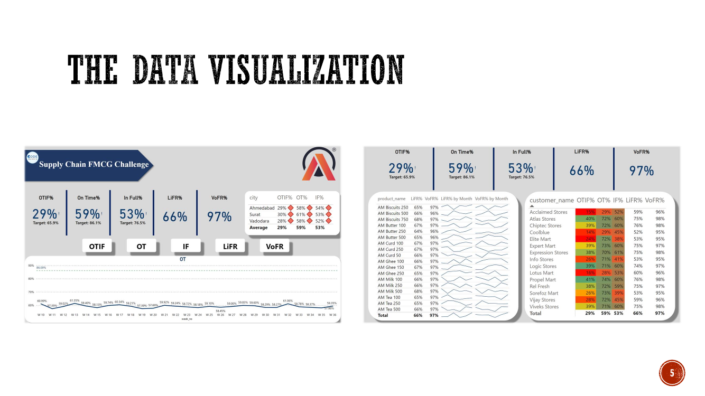
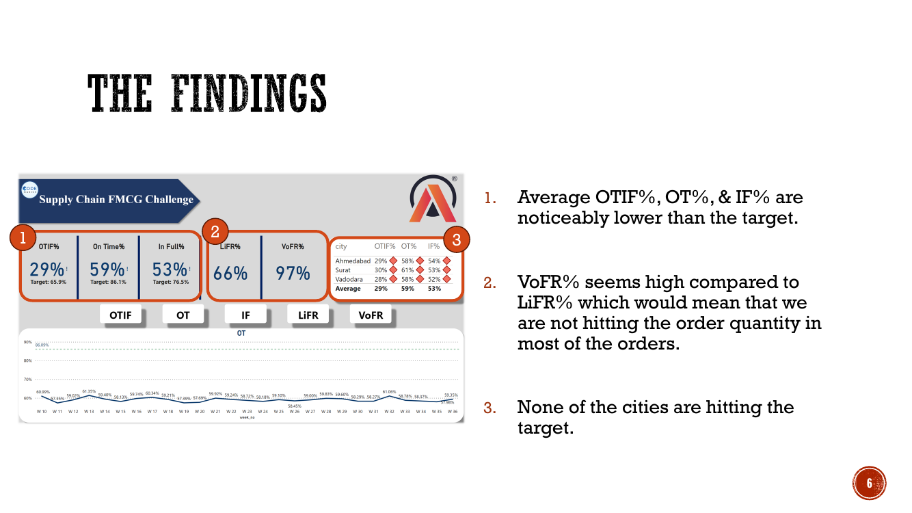
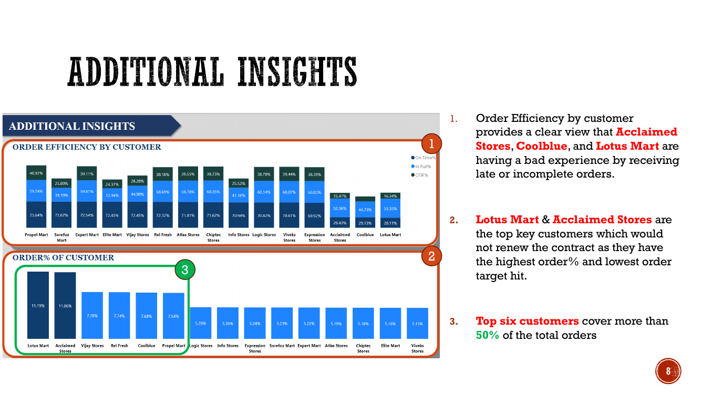
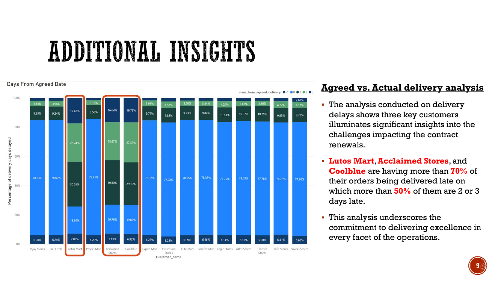

Why were key customers at risk of not renewing?
A Power BI supply-chain investigation that connected fulfillment performance, delivery delays, customer concentration, and contract-renewal risk.
The business case
Management needed to understand why important FMCG customers were not renewing their contracts. I transformed order, customer, product, target, and delivery data into an executive analysis that highlighted where service performance was breaking down.
- Prepared and analysed order, customer, product, date, and target data.
- Built interactive Power BI views for OTIF, On Time, In Full, LiFR, and VoFR.
- Added customer, product, city, and time-period analysis to move from symptoms to likely renewal risks.
Executive findings


- Average OTIF was 29% against a 65.9% target.
- On Time was 59% against an 86.1% target.
- In Full was 53% against a 76.5% target.
- No city achieved its target, indicating a broad service-performance problem rather than one isolated branch.
Customer-renewal risk


Lotus Mart, Acclaimed Stores, and Coolblue were the highest-risk customers based on low target achievement and repeated delivery delays. More than 70% of their orders were delivered late, and more than half of those late orders were two or three days late. The top six customers represented more than 50% of total orders, increasing the commercial impact of service failures.
Recommendations
- Improve demand forecasting to increase In Full, LiFR, and VoFR performance.
- Review geographical distribution, delivery capacity, and employee workload to reduce delays.
- Assign focused account ownership for high-volume customers and monitor their fulfillment recovery.